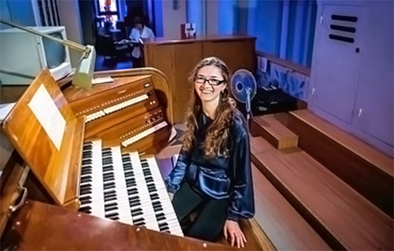

Няшенко Анна

Орган костьолу св. М.Магдалини, опус 2565, був збудований у 1936 році відомою чесько-австрійською фірмою «Rieger». Орган мав 70 регістрів (з них — 3 трасмісійних), 4 мануала, педаль. Головний пульт було встановлено біля основної частини органа на балконі. Незвичайним в органі було те, що 12 регістрів 4-го мануала — Choir — були розміщені окремо в іншому кінці залу в спеціальній шафі з лівого боку над вівтарем; мав орган і додатковий пульт управління в самому вівтарі. При грі на цій частині органа треба було відкрити вікна в кімнаті над вівтарем, а при закритих вікнах створювався ефект приглушення гучності, що дозволяло органісту полегшити супровід хору. При виконанні творів з головного пульта Choir дозволяв створювати ефект віддаленого і таємничого звучання. Велика кількість регістрів та артистичних можливостей робили цей орган придатним не тільки для служби, але і для концертних виступів. Після другої світової війни орган перестав діяти, а на початку 60-х років приміщення костьолу передали клубу політехнічного інституту. Лише у 1968-69 роках чеська фірма «Rieger-Kloss» з міста Крнов в Північній Моравії виконала першу чергу реконструкції і він знову заграв. Замість старого фірма встановила новий пульт, відновила втрачені труби, довелось змінити розподіл регістрів між мануалами. Choir було вирішено не відновлювати, хоч збереглись шафа, повітряні канали, частина труб і додатковий пульт. Першим і постійним органістом упродовж 20 років на цьому органі був Самуїл Дайч, викладач кафедри фортепіано Львівської консерваторії. Новий орган ств першим таким великим і якісним на Україні, і концерти видатних виконавців та львівського органіста С. Дайча завжди збирали повний зал слухачів і викликали ентузіазм. У 1986 році концертна діяльність на органі припинилась — інструмент знову вимагав ремонту. У 1988 році фірма Rieger-Kloss здійснила другу чергу реконструкції. Тут відкрився Будинок органної та камерної музики, постійним органістом якого став Віталій Півнов. Але сталось так, що в аварійний стан прийшло само приміщення костьолу: стіни почали давати усадку і це загрожувало падінням стелі. Довелось виконувати великі зовнішні будівельні роботи. Сьогодні цей орган залишається одним з найбільших в Україні. За звучанням він — романтичного типу з оркестральним характером, але багатий досвід фірми-будівника дозволив уникнути романтичної однобокості. Орган має 60